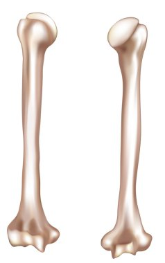

Skull
The skull is a complex structure made up of 22 bones that protect the brain and form the structure of the face. It consists of two main parts: the cranium (which encases the brain) and the facial bones. The skull provides shape and support to the head and is essential for the attachment of facial muscles.
Ribs
The ribcage consists of 12 pairs of ribs that protect vital organs in the thoracic cavity, including the heart and lungs. The ribs are attached to the spine at the back and, for the most part, to the sternum at the front. They provide structural support and assist in the process of breathing by allowing the chest to expand and contract.
Carpal
Carpals are a set of eight small, irregularly shaped bones that form the wrist, situated between the forearm's radius and ulna bones and the metacarpals of the hand. These bones are arranged in two rows: the proximal row (closer to the forearm) and the distal row (closer to the hand). The carpal bones include the scaphoid, lunate, triquetrum, pisiform, trapezium, trapezoid, capitate, and hamate. Together, they create a flexible, supportive structure that allows the wrist to move in various directions.
Coccyx
The coccyx, commonly referred to as the tailbone, is a small, triangular bone located at the very bottom of the vertebral column, just beneath the sacrum. It is composed of three to five vertebrae, either fused or semi-fused together.
Femur
The femur is the longest and strongest bone in the human body, located in the thigh. It connects the hip joint to the knee joint and supports the weight of the body during activities such as walking, running, and jumping. The femur's head fits into the acetabulum of the pelvis, forming the hip joint.
Humerus
The humerus is the long bone of the upper arm, extending from the shoulder to the elbow. It allows for the movement of the arm and supports muscle attachment. The humerus articulates with the scapula at the shoulder joint and with the radius and ulna at the elbow joint.
Metacarpal
Metacarpals are the five long bones that form the framework of the palm of the hand, connecting the wrist (carpals) to the fingers (phalanges). These bones are numbered from one to five, starting from the thumb side of the hand. Each metacarpal has a base that connects to the wrist, a shaft, and a head that articulates with the proximal phalanges to form the knuckles.
Patella
The patella is a small, flat bone located in front of the knee joint. It protects the knee and helps with knee extension by providing leverage to the quadriceps muscle. The patella is a sesamoid bone, meaning it develops within a tendon.
Pelvis
The pelvis is a bony structure located at the base of the spine, connecting the trunk and the legs. It supports the weight of the upper body, protects internal organs like the bladder and reproductive organs, and provides attachment points for muscles involved in movement and posture.
Phalanges
Phalanges are the small bones that make up the fingers of the hand and the toes of the feet. In total, humans have 56 phalanges, with 14 in each hand and foot. These bones are crucial for the fine motor skills that allow for precise movements, such as typing, gripping objects, and other complex hand functions. The structure of phalanges also plays a vital role in balance and weight distribution when walking or running.
Radius

The radius is one of the two bones in the forearm, located on the lateral (thumb) side. It plays a key role in the rotation of the forearm, allowing movements such as pronation and supination, where the hand turns palm up or palm down.
Scapula
The scapula is a triangular-shaped bone located on the upper back. It connects the humerus (upper arm bone) to the clavicle and provides attachment points for several muscles involved in shoulder movement. It plays a vital role in allowing a wide range of motion for the arm.
Sternum
Also known as the breastbone, the sternum is a flat bone located at the front of the chest. It connects to the ribs via cartilage and plays a crucial role in protecting the heart and lungs. The sternum is made up of three parts: the manubrium, body, and xiphoid process.
Tarsals
Tarsals are a group of seven bones located in the foot's ankle region, forming its structure and providing support for movement. They include the calcaneus (heel bone), talus, and others that work together to enable walking, running, and maintaining balance.
Tibia
The tibia is the larger of the two bones in the lower leg (the other being the fibula). It bears most of the weight of the body and is crucial for walking and standing. The tibia connects to the knee joint at the top and the ankle joint at the bottom.
Ulna
The ulna is one of the two long bones in the forearm, located on the side opposite the thumb. It runs parallel to the radius and helps form the elbow joint, playing a key role in forearm movement, particularly in flexion and extension.